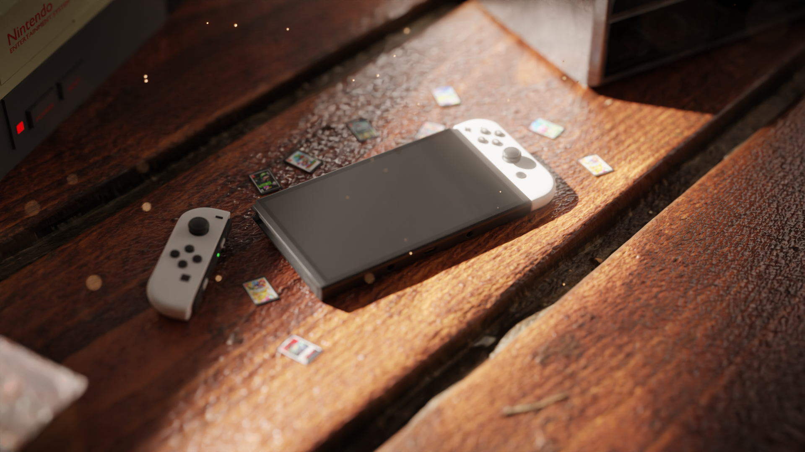
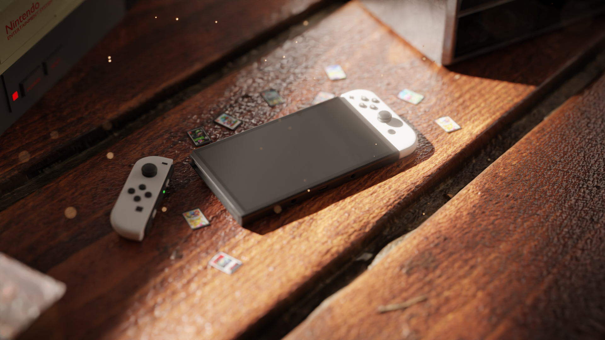
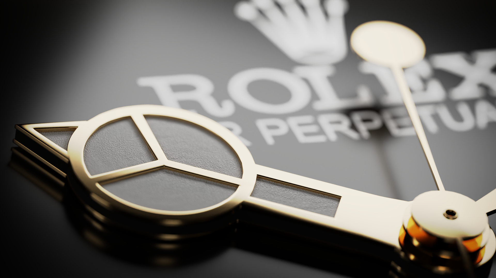
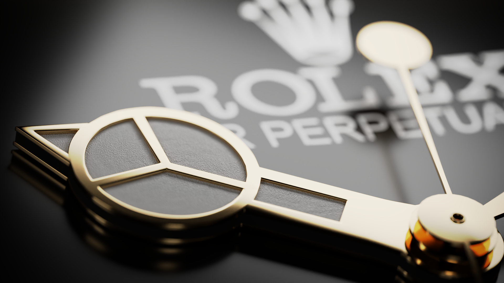

Fotografija | 3D animacija | 3D vizualizacija | Video produkcija
Zovem se Vito Špicar i kreativni sam vizualni umjetnik specijaliziran za fotografiju, video produkciju, 3D animaciju i 3D vizualizaciju. Moja strast prema digitalnom stvaranju počela je još u mladosti, a tijekom godina sam razvijao svoje vještine kroz razne projekte, natjecanja i profesionalne angažmane.
Svojim radom nastojim kombinirati tehničku preciznost i kreativni izražaj, stvarajući vizuale koji pričaju priču i prenose emocije.
Moj cilj je stalno rasti, učiti i inspirirati druge kroz vizualni sadržaj koji kreiram.

 


 
